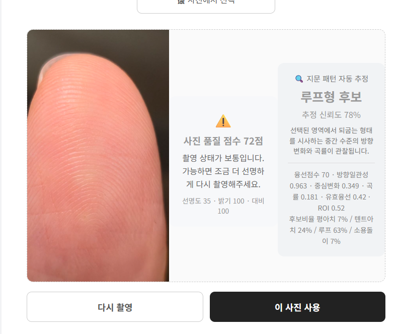

FINGER IQ
지문 다중지능 분석
지문을 통해 발견하는
나의 강점과 잠재력
📷 촬영 예시

손끝 지문이 화면에 크게 보이고
지문의 선이 눈으로 구분될 정도로 촬영해주세요.
검사 유형을 선택해주세요
※ 본 검사는 상담 및 자기이해를 위한 성향 분석 도구입니다.
1
/
10
왼손
왼손 엄지 지문
손가락 끝의 지문이 선명하게 보이도록
카메라로 촬영해주세요.
손끝 지문을 이 영역에 맞춰주세요
촬영한 지문이 여기에 표시됩니다.
지문 등록 완료
10개의 지문 사진이 모두 등록되었습니다.
FINGER IQ
분석 결과
FINGER IQ REPORT
개인 성향 분석 리포트
1. 핵심 성향 요약
2. TOP 3 강점 상세 설명
3. 추천 직업·역할
4. 상대적으로 낮은 영역의 보완점
5. 인간관계 강점
6. 인간관계에서 유의할 점
7. 학습 / 업무 스타일
8. 8개 영역 전체 분석
8개 영역은 무엇을 의미하나요?
언어지능말·글·이야기·설명으로 생각을 이해하고 표현하는 영역
논리수학지능원인·결과·규칙·수치·문제 해결 구조를 파악하는 영역
공간지능이미지·형태·위치·배치·시각적 구조를 이해하는 영역
신체운동지능몸의 움직임·직접 체험·손을 사용하는 활동과 관련된 영역
음악지능리듬·소리·음색·반복되는 청각적 패턴을 느끼는 영역
대인관계지능타인의 반응·감정·관계를 이해하고 협력하는 영역
자기성찰지능자신의 감정·생각·목표를 돌아보고 방향을 정하는 영역
자연탐구지능관찰·분류·차이 발견·환경과 생명 현상에 관심을 두는 영역
지문 패턴을 활용한 성향 콘텐츠이며 전문적인 심리·적성검사를 대체하지 않습니다
LEARNING STYLE
추천 학습 스타일
지문 패턴을 활용한 성향 콘텐츠이며 전문적인 심리·적성검사를 대체하지 않습니다